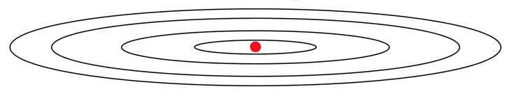

Momentum, RMSprop, and Adam Optimization for Gradient Descent
Say we’re trying to optimize over an oblong cost function like the one below.
from IPython.display import Image
Image('images/momentum_1.png')
Traditionally, we know that there’s a large emphasis on the learning rate, alpha, that dictates the step size of our gradient descent.
Too large, and we wind up over-shooting paths that would allow us to converge sooner (purple). Too small, and it takes forever to run (blue).
Image('images/momentum_2.png')
However, you look at these lines, they learn at a reasonable pace in the X plane, while oscillating back and forth in the Y.
Momentum
By introducing a concept of “Momentum” we can continue to enjoy the horizontal descent rate, while deliberately dampening the variance in the Y.
Pseudocode
We define v_dW and v_db terms to be “velocity” terms with the same shape as their gradient counterparts. And depending on our values for beta and alpha, we can tune how much momentum we want subsequent gradients to gather.
On iteration t:
Compue dW, db for current mini-batch
v_dW = beta * v_dW + (1 - beta) dW
v_db = beta * v_db + (1 - beta) db
W = W - alpha * v_dW
b = b - alpha * v_db
If this form looks similar to Exponentially Weighted Moving Averages, that’s only because it is.
Note that because we’re weighting successive gradient steps against one another, the X movement will reinforce, whereas the Y movement will have a cancelling-out effect.
RMSprop
The Root Mean Squared propagation algorithm looks extremely similar to momentum approach we outlined above.
On iteration t:
Compue dW, db for current mini-batch
s_dW = beta * v_dW + (1 - beta) (dW ** 2)
s_db = beta * v_db + (1 - beta) (db ** 2)
W = W - alpha * (dW / (sqrt(s_dW) + epsilon))
b = b - alpha * (db / (sqrt(s_db) + epsilon))
Key difference here is how we element-wise square the last term in our calculations of s_dW and s_db. This matters a ton because on the update step, we’re dividing by the s coefficients (and adding a negligible epsilon coefficient so we don’t run into divide-by-zero errors)
So intuitively:
- If
dWis large- We square it, giving us a larger number in the denominator
- This makes the whole learning rate coefficient smaller, so we make a smaller update
- This is what we want to happen on our
Yaxis
- If
dbis small- Squaring it makes the number even smaller
- Dividing by the square root of a smaller number makes for a much larger update coefficient– a big step
- This is what we want to happen on the
Xaxis
Whereas the momentum approach ramps up after the model gains, well, momentum, this allows us to begin converging more quickly (green line) by correcting for a large gradient value right out of the gate.
Image('images/momentum_3.png')
Adam Optimization
The current de-facto optimization algorithm, Adam (Adaptive Moment Estimation) combines both Momentum and RMSprop into a mouthful of an update step, borrowing the best features of both to give you smoother cost functions as well as higher accuracy.
Pseudocode
Note:
- We’ve got two separate
betacoefficients– one for each optimization part. - We implement bias correction for each gradient (see bottom of Exponentially Weighted Moving Averages for explanation)
On iteration t:
Compue dW, db for current mini-batch
# Momentum
v_dW = beta1 * v_dW + (1 - beta1) dW
v_db = beta1 * v_db + (1 - beta1) db
v_dW_corrected = v_dw / (1 - beta1 ** t)
v_db_corrected = v_db / (1 - beta1 ** t)
# RMSprop
s_dW = beta * v_dW + (1 - beta2) (dW ** 2)
s_db = beta * v_db + (1 - beta2) (db ** 2)
s_dW_corrected = s_dw / (1 - beta2 ** t)
s_db_corrected = s_db / (1 - beta2 ** t)
# Combine
W = W - alpha * (v_dW_corrected / (sqrt(s_dW_corrected) + epsilon))
b = b - alpha * (v_db_corrected / (sqrt(s_db_corrected) + epsilon))
Coefficients
alpha: the learning rate. Needs tuning.
beta1: momentum weight. Default to 0.9.
beta2: RMSprop weight. Default to 0.999.
epsilon: Divide by Zero failsave. Default to 10 ** -8.